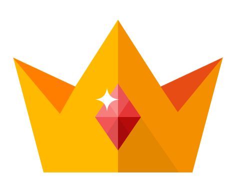

2015-07-26 고등학교 2학년
Fade Out
MOBILE APP GAME
Unity / C#
제작인원 : 3명 / 프로그래머 담당
제 8회 APPJAM 게임부문 1위, 전체2위
모바일 게임 Fade Out
기억이라는 주제를 몽환적으로 담은 게임
중앙에있는 것이 기억이고 그 기억을 적으로부터 지키는 게임이다.
터치로 플레이어를 움직일 수 있으며 적에게 이동하여 부딪히면 적을
밀어낸다. 적의 수는 시간이 지날 수록 증가한다. 순발력을 이용해 기억을 지켜내는 게임
Unity 엔진을 이용해 가속도, 증속을 구현했다